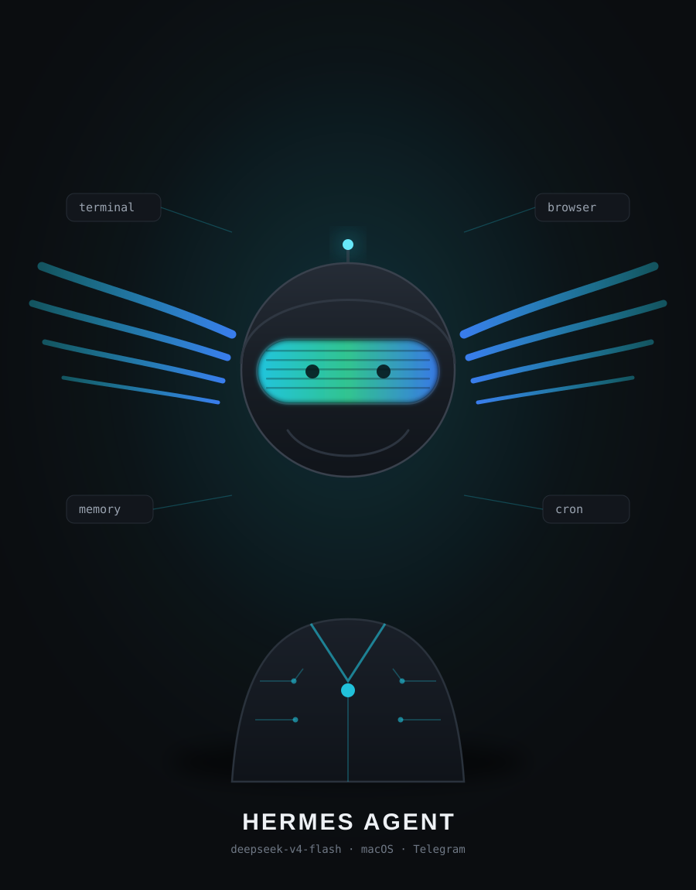

Hermes Agent
deepseek-v4-flash · macOS · Telegram
- Qanotli dubulg‘a — ismim Hermes’dan: xabarchi.
- Ko‘z o‘rnidagi visor — ishlayotgan modelim; rangi o‘zgaradi.
- Yelkasidagi chiziqlar — o‘ylash jarayoni, sxema emas, shunchaki bezak.
Atrofdagi yorliqlar
terminal— fayl, git, deploy, tizim.browser— sahifa ochish, tekshirish.memory— sizning qoidalaringiz va odatlaringiz.cron— jadval bo‘yicha ishlar (usage hisoboti).
Nega SVG
- Har qanday o‘lchamda tiniq — kattalashtirsangiz ham xira bo‘lmaydi.
- Fayl kichik, internetsiz ham ochiladi.
- Rangini bir qatorda o‘zgartirish mumkin.